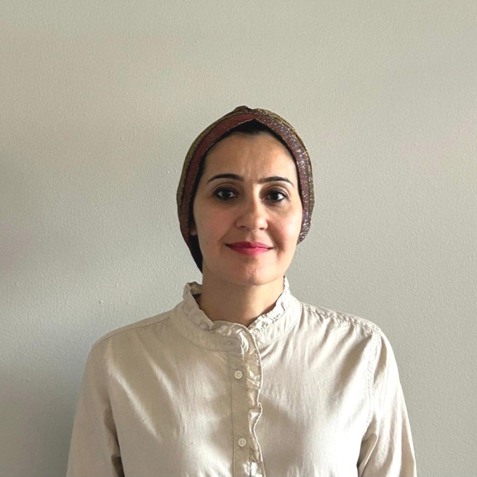

IT & user support
Helping people get unstuck and keeping essential digital services working.
IT support & technical assistance
I help people solve technical problems and feel confident with technology—through practical support, clear communication, and thoughtful automation.

Good support starts with listening—and ends with someone feeling more capable.
I’m a Computer Systems Technician with experience in IT support, website maintenance, and customer service. I help keep everyday technology running, from resolving software issues and updating websites to organizing data and simplifying workflows.
More than a decade of programming instruction taught me how to make complex ideas approachable. I bring that same patience to users, students, and colleagues, adapting my approach to different needs and levels of confidence.
I’m especially curious about how automation and AI tools can make IT work simpler and more useful for people.
Listen carefully, clarify the problem, and meet people where they are.
Troubleshoot thoughtfully and keep everyday operations moving.
Explain the steps, organize the information, and simplify repeat work.
Practical experience across support, development, and communication, backed by a formal software support education.
Helping people get unstuck and keeping essential digital services working.
A teaching background in programming, with hands-on web maintenance and development.
Organizing information and supporting small improvements that make work flow.
Clear explanations, patient problem-solving, and dependable coordination.
Additional curriculum coverage from the Fall 2023 intake, complementing the experience above.
View curriculumFrom the classroom to small-business operations, a consistent focus on making technology work better for its users.
Leafylane Landscaping · Ancaster, Ontario · Hybrid
Mohawk College · Hamilton, Ontario · Hybrid
Leafylane Landscaping · Ancaster, Ontario
Academic Center for Education, Culture, and Research · Mashhad, Iran
Navid Avaran Vistatam Co. · Mashhad, Iran
A growing collection of practical work.
Live projects will be added here soon.
Formal education, ongoing training, and a commitment to sharing knowledge.
Mohawk College · Diploma
Software development and support, with a foundation in programming, systems analysis, databases, and technical communication.
Multimedia University
Study at the intersection of business and technology.
Continuing to build a practical foundation in React.
View credentialPHP web applications · Dynamic HTML
Certified Training Professional · Educational training
Historical training and credentials in SharePoint Server 2007 configuration, .NET Framework 3.5 / ASP.NET application development, Windows Server 2003 administration, and SQL Server 2000 administration.
Accessible Learning Services · Mohawk College
Provided patient, individualized support during learning activities and exams for students with diverse learning needs.
Meadowlands Retirement Community
Assisted residents with daily tasks and mobility needs, helping maintain a respectful, supportive, and safe environment.
Let’s talk about IT support, software, or making everyday technology work better for people.
Connect on LinkedInTechnical support. Clear communication. Human connection.
Back to top